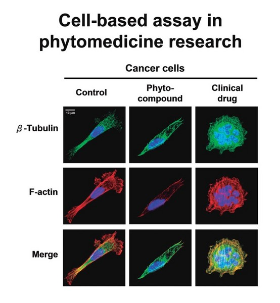
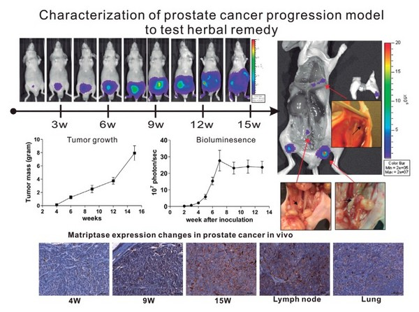

草藥科技研究
本組在草藥醫學研究方面，著重於分離、鑑定植物所含具有醫療保健功效的化學成分，建立各種與發炎疾病相關的細胞培養、小鼠模式等實驗系統，並藉以篩選、驗證標的草藥之抽出物、分離層、以及植物代謝物用於醫療保健的功效。我們已成功鑑定或開發抗防癌之金線連抽出成份、山藥用於化療後之免疫調節功能、咸豐草成分之抗糖尿病活性、昭和草醣脂類化合物之抗發炎與抗癌、黃花蜜菜的抗前列腺癌，地膽草倍半萜內酯成分之抗乳癌功能及分子作用機制等。並利用良好農業規範 GAP（Good Agricultural Practice）方式進行紫錐菊植物的栽培，利用代謝體學之研究技術系統，分析紫錐菊在採收前後以數種方式處理對次級代謝物以及活性成分分布與含量的影響。中長程學術發展上，本組將針對台灣本土常用或具開發潛力的藥草擴大展開下述的研究： 一、以 GAP 的方式栽培研究用的藥草，訂定藥草栽培、採收的農藝規範； 二、研究植物代謝工程（MetabolicEngineering）、目的在模擬植物抗逆境生理方式，提高藥用植物內活性成分含量的技術，提升藥草在農業、營養、醫療保健上的品質、特性與產量； 三、藥草醫療保健功能方面，研究各種台灣可種植的藥草，針對其抗發炎、抗腫瘤、抗癌轉移、癌症治療佐劑、免疫調節、免疫佐劑等功能進行研發，並根據藥草所含之有效化學成分（Active Pharmaceutical Ingredients 或簡稱 API）研發藥效優化的植物新藥，制定管控藥品原料品質標準化所需的分析技術，並深入研究其藥理作用機制； 四、發展整合性生物體學技術，結合基因體學、轉錄體學、與代謝體學的圖譜分析技術，用於鑑定醫療保健功效相關成分、分析特定的或有藥效的化合物在植物中的生合成途徑， 以及研究有藥效成分在動物體內產生藥效相關的代謝物血漿濃度與動態變化； 五、研發新興的質譜儀影像技術，並用來顯現動、植物、昆蟲與微生物之物種間，透過釋放代謝物於原位組織內所產生的互動，以解决與農業與疾病相關的重要問題。

